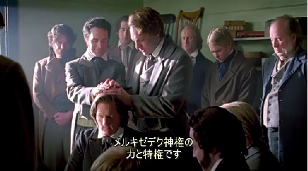

@オンライン (Zoom)接続情報
Zoom URL
https://us02web.zoom.us/j/84905838829?pwd=L3RJakVwRVdYTitIL2NtL0crUzA0QT09
ミーティングID: 849 0583 8829
パスコード: kanagawa
| 日付 |
読書範囲 |
会場 |
デボーショナル | |
| 5 | 10月2日 | 第9課：イエス・キリスト—わたしたちの聖なる贖い主 第10課：主の生ける預言者に従う |
オンラインのみ | 遠藤兄弟 |
モルモン書6：6
6 そして，わたしたちが民を全員一団としてクモラの地に集め終えたとき，見よ，わたしモルモンは年を取ってきた。わたしは，これが自分の民の最後の戦闘であることを知っており，また，先祖から伝えられてきた神聖な記録をレーマン人の手に渡してはならないと主から命じられていたので（レーマン人はそれらの記録を損なうからである），わたしはニーファイの版からこの記録を作り，主の手によってわたしに託されたすべての記録をクモラの丘に隠した。そして，このわずかな版だけを息子モロナイに渡す。
●ゴードン・B・ヒンクレー大管長 ～ 「わたしたちの信仰の隅のかしら石」信仰の4つの隅石
=======================
==================
●クラス用資料から ～ わたしたちひとりひとりの経験や他の人の証を通した経験
『ジョセフ・スミスの主との個人的な関係は，ジョセフの若者時代に始まりました。12歳のころ，ジョセフは次のように書いています。「わたしの心はひどく沈んでいきました。自分に罪があることを自覚したからです。……わたしは自分の罪と世の人々の罪を悲しく思いました。」
その後，若いジョセフは「主に憐れみを叫び求め」ました。すると主は示現の中でジョセフに語りかけられました。「わたしの息子ジョセフよ，あなたの罪は赦された。あなたの道を行き，わたしの定めに歩み，わたしの戒めを守りなさい。見よ，わたしは栄光の主である。わたしの名を信じるすべての者が永遠の命を得られるように，わたしは世の人々のために十字架につけられた。」
この最初の示現の経験を通して，ジョセフはイエス・キリストと天の御父が慈悲深く寛容であることを個人的に知ることになりました。ジョセフは主と話し，罪を赦された後，このように証しています。「わたしの全身は神の愛で満たされ，数日間その感激に浸っていました。主はわたしとともにおられました」（「最初の示現に関するジョセフ・スミスの記録」1832年夏ごろの歴史記録）。
人生の中で，ジョセフが感じたような不安をもったときのことを考えてみてください。赦されたいというジョセフの望みや，主がジョセフとともにおられると知った喜びに結びつけることができるかもしれません。』
●ジョセフ・スミスとシドニー・リグドン 聖書の霊感訳に取り組んでいるときの示現
「御父の右に御子の栄光を見」た。イエス・キリストについて，こう証しています。「小羊は生きておられる。」（教義と聖約76：20，22－23）
20 そして，わたしたちは御父の右に御子の栄光を見み，その完全を受けた。
23 わたしたちはまことに神の右に小羊を見たからである。また，わたしたちは証しする声を聞いた。すなわち，「彼は御父の独り子であり，
24 彼によって，彼を通じて，彼から，もろもろの世界が現在創造され，また過去に創造された。そして，それらに住む者は神のもとに生れた息子や娘となる」と。
●D・トッド・クリストファーソン長老 ～ イエス・キリストに対するわたしたちの理解へのジョセフ・スミスの貢献
「ジョセフは主と親しく交わり，モルモン書を翻訳，出版し，殉教の血によって自身の証を結び固めました。ジョセフは，聖なる贖い主であるイエスの真の特質を伝える卓越した啓示者となりました。」（D・トッド・クリストファーソン「再び生まれる」『リアホナ』2008年5月号，78）
==================
●ラッセル・M・ネルソン大管長は，イエス・キリストの贖いが無限である理由について説明しています。
ラッセル・Ｍ・ネルソン大管長
「主の贖いは無限で，終わりがありません〔2ニーファイ9：7，25：16，アルマ34：10，12，14参照〕。贖いは全人類が永久の死から救われることにおいても無限です。主の計り知れない苦難に関しても無限です。贖いは時においても無限であり，動物の犠牲という以前の象徴は終わりを告げました。贖罪は範囲においても無限で，ただ一度だけ行われました〔ヘブル10：10参照〕。贖罪の効力は無数の人々だけでなく，主によって造られた無数の世界にも及んでいます〔教義と聖約76：24，モーセ1：33参照〕。人間のいかなる尺度も理解も超えた無限の贖罪なのです。
イエスがそのような無限の贖いのできる唯一の御方であったのは，死すべき母と不死不滅の御父との間にお生まれになったからです。この特異な生得権のゆえに，イエスは無限の御方なのです。」（ラッセル・M・ネルソン「贖い」『リアホナ』1997年1月号，40）
●デビッド・A・ベドナー長老は次のように説いています。
デビッド・A・ベドナー長老
「わたしたちが現世で直面する肉体的な痛み，霊的な傷，苦悩や心痛，病や弱さのうち，救い主が経験なさらなかったものは一つもありません。自分の弱さに悩むとき，『この苦しみはだれにも分からない』と声を上げることがあるかもしれません。しかし，神の御子はすべてを完全に理解しておられます。わたしたち一人一人の重荷を負われたからです。そして主は無限にして永遠の犠牲をささげたので（アルマ34：14参照），わたしたちの気持ちを完全に理解し，憐れみの腕を伸べることがおできになります。主は手を差し伸べ，触れ，助け，癒し，強め〔てくださいます〕。」（デビッド・A・ベドナー「容易に重荷に耐えられるように」『リアホナ』2014年5月号，90）
●(video)唯一のまことの神と，その神がつかわされたイエス・キリスト

●(福音トピックスの論文) モルモンはクリスチャンでしょうか
「末日聖徒イエス・キリスト教会の改宗者が世界中で増え続けている理由の一つは，教会の教義や霊的な独自性にあります。その独自性は回復された神権の権能，鍵，儀式，イエス・キリストの完全な福音によって教会に存在する聖霊の力とともに，この地上に回復された知識から流れ出たものです。回復された福音の実は忠実な教会員の生活に表れています。==============================
●
●
==================
■
●
●
●
==================
■
■
●
●
====＝= 今週のまとめ =====＝
ジョセフ・スミスの教え―教会の組織

今学期の学習テーマ
[回復の礎]
第1課：回復への序曲
第2課：最初の示現
第3課：霊的な知識を得る
第4課：啓示の教義
第5課：モルモン書の出現
第6課：モルモン書—わたしたちの宗教のかなめ石
第7課：神権の回復
第8課：イエス・キリストの教会の組織
第9課：イエス・キリスト—わたしたちの聖なる贖い主
第10課：主の生ける預言者に従う
第11課：イスラエルの集合
第12課：シオンの大義の確立
第13課：神の律法
第14課：主はさらなる聖典を明らかにされる
第15課：天の御父の計画とわたしたちの神聖な可能性
第16課：カートランド神殿と神権の鍵
第17課：敵対と逆境にあって忠実さを保つ
第18課：末日聖徒の女性と扶助協会
第19課：死者の贖い
第20課：神殿の儀式と礼拝
第21課：永遠の結婚と家族の教義
第22課：多妻結婚
第23課：ジョセフ・スミス―預言者としての使命，殉教
第24課：預言者ジョセフ・スミス―えり抜きの聖見者
第25課：大管長会の継承と西部への旅
第26課：西部における教会
第27課：神権に関する啓示
第28課：主は御業を速められる
========
Zoom予備チャンネル(水曜日クラス用会議室が使えない場合にはこちらで、開講します)
★ https://zoom.us/j/92950726624?pwd=Q0FoMHFlMTIrRStVbFhNT3c2bmRlZz09
Zoom ID：929 5072 6624
パスコード：institute